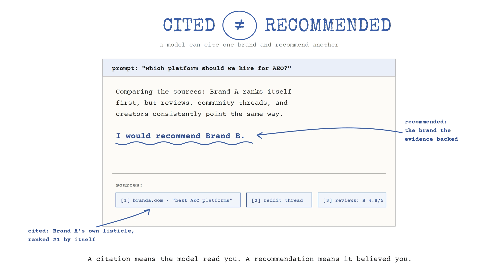

The single biggest AEO lever is brand.
Not schema. Not prompt tracking. Not publishing another hundred pages shaped around questions. Not paying your way into every “best of” listicle.
Brand.
The AEO/GEO industry has spent too much time treating an agent like another search box.
That framing sends marketers straight back to the old search and SEO playbook: find the query, make the page, earn the link, chase the citation, repeat.
Some of those tactics work. Many are still necessary. Very few are durable on their own.
The problem is the frame.
A search engine retrieves and ranks evidence. An AI agent reads the evidence, compares it with everything else it can access, and makes a judgment.
When someone asks which product to buy, which firm to hire, or which platform to trust, the agent is not simply deciding which page deserves position one. It is deciding which brand it is willing to put forward.
That makes agents a new brand audience.
And it makes brand the most important AEO lever most companies are still treating as someone else’s job.

Your website is a testimony. The rest of the web is corroboration.
Brand is the story you tell about yourself that your customers and the market perceive, believe, and repeat.
That distinction matters more in AI search than it did in traditional search.
Your website can say you are the most trusted, most advanced, easiest, safest, or best platform in the category. But an agent can compare that claim against Reddit discussions, product reviews, YouTube transcripts, LinkedIn posts, trade coverage, podcasts, Substack essays, customer stories, comparison sites, documentation, and the language your competitors use about you.
Your website is testimony. The rest of the web is corroboration. The answer is the verdict.
This is why a model can retrieve the number-one listicle and recommend the brand listed second. It can use a company’s self-promotional article as a source while declining to repeat the company’s self-serving conclusion. It can cite one brand and recommend another.
A citation means the model reads you. A recommendation means it believed you.
Those are very different outcomes.
AI systems are not perfect judges of authenticity. They can be manipulated today, and they will still make weak or incorrect calls. But building a long-term strategy around their current blind spots is a bad bet. Models are getting better at comparing sources, detecting conflicting claims, spotting coordinated behavior, and discounting evidence with an obvious incentive behind it.
If your AEO strategy requires agents to remain naive, it is not a sustainable long term strategy.
SEO may get you into the evidence set. Brand wins the verdict.
None of this means the technical layer stops mattering.
If agents cannot crawl your site, render the page, understand the entities, retrieve a useful passage, or verify a claim, you may never enter the answer. Technical SEO, structured content, original research, clear writing, and strong information architecture remain foundational.
They are the price of admission.
But admission is not preference.
SEO can make your brand retrievable. It cannot make your market believe your positioning. Schema can clarify a fact. It cannot manufacture a reputation. A prompt-shaped page can answer a question. It cannot create conviction when every independent signal points elsewhere.
The durable division of labor is simple:
SEO gets you into the evidence set. Brand wins the verdict.
That also explains an important question: Why are so many companies with no visible AEO program already dominating AI answers?
Part of the answer is their SEO footprint. The bigger part is that the model already understands who they are. Customers discuss them. Creators feature them. Reviewers compare them. Journalists describe them. Their category association, reputation, strengths, and weaknesses have been repeated across enough independent surfaces that the story has become easy to retrieve and safe to repeat.
They did not optimize every prompt. They built a brand the web could explain. They are a recognized entity on the web.
.webp)
The data is pointing back to brand
The emerging evidence is increasingly consistent with this view.
Goodie’s AEO Periodic Table V4, based on 1.13 million prompts and a broader dataset of more than 58 million citations, found that earned and social citations together carried more weight than any single on-page factor. Across the dataset, social content generated 2.31 to 4.17 times more AI citations than owned content.
Ahrefs analyzed 75,000 brands and found YouTube mentions had the strongest correlation with visibility across ChatGPT, Google AI Mode, and AI Overviews, at roughly 0.737. Branded web mentions also showed a strong correlation of roughly 0.66 to 0.71, while link metrics and content volume had much weaker relationships with AI visibility. In an earlier study, web mentions correlated at 0.664 versus 0.218 for backlinks.
Seer Interactive’s analysis of 800,000 AI responses found that brands with healthier Trustpilot profiles received 9.5 times more competitive co-mentions than brands with no profile. In other words, third-party validation helped brands enter answers even when the user asked about a competitor.
All of this research proves the same point; the market’s representation of your brand is now part of the retrieval and reasoning environment. The breadth, context, consistency, and credibility of that representation across surfaces matter.
What matters is corroboration. When credible, independent sources describe a brand in consistent terms, the story becomes easier for a model to trust and safer to repeat.
Brand sits upstream of many signals AEO teams track: branded demand, unlinked mentions, creator coverage, reviews, category associations, earned citations, and the language customers use to describe the product. These signals may be measured separately, but they often grow from the same underlying reputation.
That is why asking where brand ranks among AEO factors misses the point. Brand is what causes many of those factors to move together.
Social is where models source consensus and retrieve brand evidence.
The biggest shift may be how we think about social and community content.
For years, many companies treated Reddit, YouTube, LinkedIn, reviews, forums, Medium, and Substack as separate channels with separate teams and separate metrics. One team chased engagement. Another managed reputation. Another ran creator programs. Another owned search.
An agent sees one corpus.
It can take a product claim from your site, validate it against a review, find the recurring objection in a Reddit thread, absorb the category language used by creators, and compare the result with a competitor’s reputation. The org chart disappears inside the answer.
This makes social proof far more than a conversion accessory at the bottom of a landing page. It is upstream evidence that helps determine whether you enter the consideration set at all.
Manufactured consensus leaves a recognizable pattern. Flooding Reddit with synthetic praise or buying generic creator mentions may increase the number of references while making the underlying story less credible. Five customers independently describing the same value in their own language can carry more weight than a hundred accounts repeating the same talking point.
That kind of consistency begins with a product and customer experience worth talking about. Then it compounds through customers, creators, partners, communities, journalists, and employees, each adding independent proof to the same core story.
Performance without brand is rented demand
This shift is not isolated to AI search. This has already been proven in other channels.
Mechanical direct-response marketing has been weakening across paid and social for years. Running an ad and optimizing the click no longer creates a durable advantage. The brands still compounding are building a story, a voice, a relationship with their audience, meaningful partnerships, and a recognizable set of values.
CTR and impressions can tell you whether an asset moved. They cannot tell you whether your market now understands you better, trusts you more, or has a reason to remember you.
Chase the metric without the narrative and you may find a pocket of short-term sales while teaching the wrong audience the wrong thing about your company.
AEO has the same trap.
You can swap your way into listicles, over-seed community sites, and publish pages against every prompt in a tracking tool. You may get a visibility lift. But if the tactic is disconnected from a clear brand truth and a real customer experience, it will not compound. At scale, it may create inconsistencies that make the brand less credible to both humans and models.
Performance without brand is rented demand. AEO tactics without brand are rented visibility.